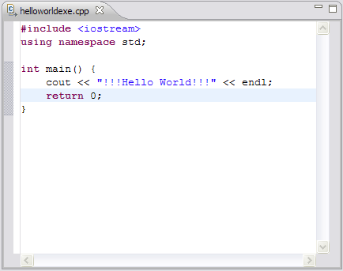

The Remote C/C++ editor provides specialized features for editing C/C++ related files.

Associated with the editor is a C/C++-specific Outline view, which shows the structure of the active C, C++ or makefile. It is updated as you edit these files.
The editor includes the following features:
The most common way to invoke the remote C/C++ editor is to open a file from the Project Explorer view using pop-up menus or by clicking the file (single or double-click depending on the user preferences).
The remote C/C++ editor does not contain a toolbar itself, but relies on the use of the main toolbar, edit menu, search menu and key binding actions.